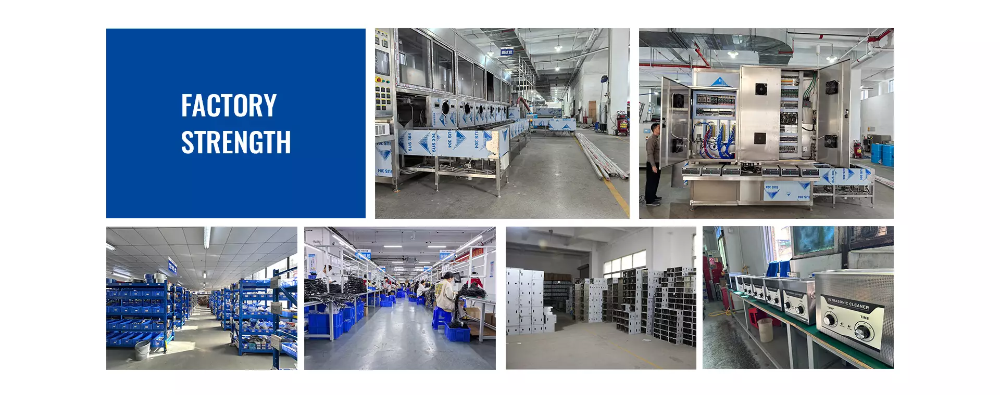

Sonic Shine’s original product showcase separates industrial equipment into single-tank, multi-tank and handling-oriented families. Those names are a useful way to navigate the range; the application brief determines which configuration deserves a closer look.
1. F Series: begin with the working envelope
The original Sonic Shine showcase identifies the F Series as its standard single-tank machine family. For an initial discussion, focus on the usable basket space, loaded weight and the geometry of the parts. External machine dimensions and nominal tank volume do not answer those questions on their own.
A single tank can be discussed as one step within a wider workflow. If the parts also require separate rinsing, drying or inspection, explain where those operations will happen. Keeping the full sequence visible helps prevent an equipment selection from leaving an essential operation unresolved.
2. F2, F3 and F4: discuss the stages
The original showcase names the F2 as a dual-tank family, the F3 as a three-tank family and the F4 as a multi-tank family. The family name alone does not establish the process assigned to every tank or guarantee a particular cleaning result.
Ask for a stage-by-stage description of the proposed arrangement. Identify the purpose of each stage, the transfer route and the condition expected before a basket moves onward. Treat rinsing and drying arrangements as configuration questions to resolve, rather than assuming that every photographed tank performs the same function.
3. Semi-automatic and automatic lifting equipment
Sonic Shine’s public range also includes semi-automatic ultrasonic cleaning equipment and automatic lifting equipment. These families bring handling into the equipment conversation. Review the basket dimensions, loaded weight, pick-up points and the path between positions.
A handling arrangement must fit the surrounding production task. Explain how the basket is loaded, where an operator works and what happens after the final stage. Automation should be discussed against an actual sequence of work, with its operating and access requirements clearly defined.
4. Read a product photograph in context
A photograph helps identify an equipment family and visible construction details. It does not establish every option, electrical requirement or specification for a future order. The same family may need a different basket, stage layout or utility arrangement for a different application.
Use photographs as a starting point for a model-specific discussion. Request the applicable technical information and confirm whether visible accessories belong to the proposed scope. The factory photographs accompanying this article are material from the original Sonic Shine website, not evidence of a new customer installation.
5. Choose the right starting point
The next step is to connect the selected family with your parts and process. Browse the equipment pages, then describe the required output so the conversation can move from a product image to a defined scope.
- Start with F Series when exploring a single-tank equipment family.
- Explore F2/F3/F4 when the process needs a discussion about multiple stages.
- Review semi-automatic and lifting equipment when basket transfer is part of the requirement.
- Bring part drawings, a proposed load and the site constraints to every configuration discussion.
Sources & further reading
Original practical guidance. External references explain general principles; they do not define a SonicShine model or guarantee results for your parts. Model values on this site are separately attributed to the supplied catalogue.